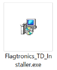
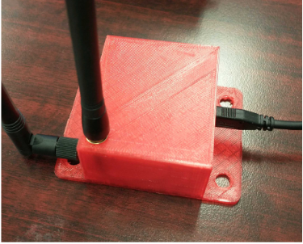
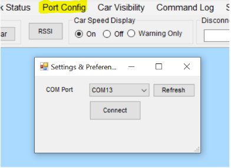
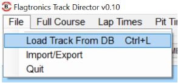
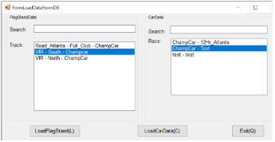
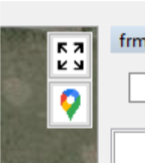
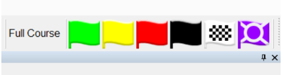
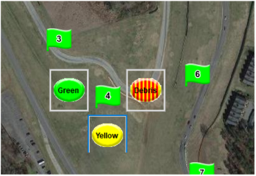
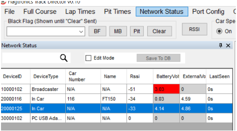
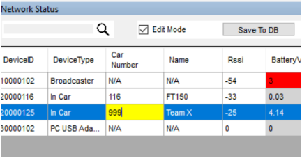

Flagtronics TrackDirector Setup Instructions
1. Install Track Director
Run Flagtronics_TD_Installer.exe and follow the instructions.
2. Connect USB Cable
Plug in the USB cable to the USB-TrackDirector interface.
3. Open TrackDirector Software
Open the TrackDirector software.
4. Configure Port
Click on “Port Config”, select the COM port of the USB-TrackDirector, then click “Connect” and close the Settings & Preferences window.
5. Select Track and Race Data
Click on file and open Load Track from DB and select from optionss.
 6. Adjust View
These buttons can be used to Zoom fit and to change to Satellite view.
7. Change Full Course Flag Status
To change the full course flag status, click on the icon in the upper right corner that corresponds to the current full course track flag: Green, Yellow, Red, Black, Checker, Purple (Code 35).
8. Change Local Flag Status
To change a local flag status, click on the numbered flagstation then select the flag for that stand: Green, Yellow, or Debris.
9. View Network Status
Click on “Network Status” to view all devices on the Flagtronics network. The CarData list will populate Car Numbers and Names based on the DeviceID, new devices will show up as N/A. (Note: Cars with car number N/A will not show up on the map)
10. Add Car to Database
To add a car to the database that is reporting as N/A under Network Status: - First, click the check box for “Edit Mode”. This pauses the Network Status updates and allows you to type. - Click in the field “Car Number” and enter the car number, then in “Name” enter the team or driver’s name. - Next, click the button “Save to DB” and uncheck “Edit Mode” to return to normal operation. That information is now saved for that car.
